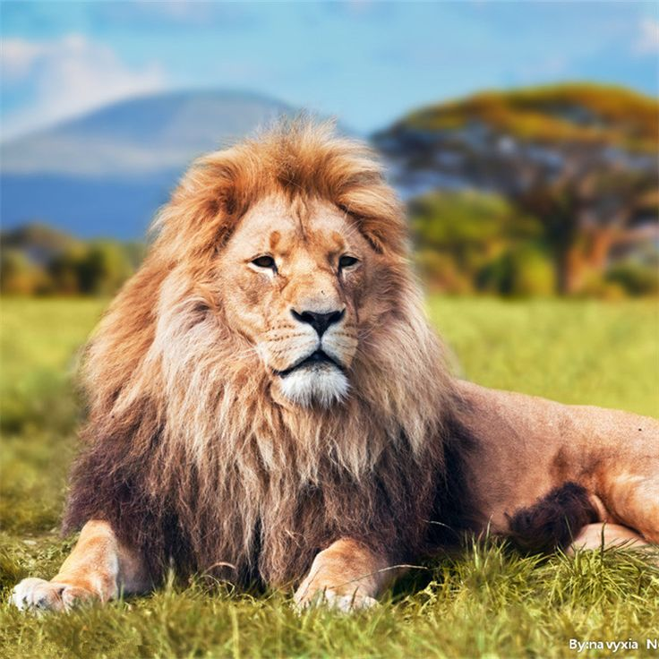

Singa

Singa dikenal sebagai "raja hutan". Mereka adalah hewan sosial yang tinggal dalam kelompok yang disebut kawanan. Singa jantan memiliki rambut lebat di sekitar kepala dan leher, yang disebut singa. Singa betina umumnya bertugas berburu, sementara singa jantan melindungi wilayah mereka.
Singa adalah karnivora dan mereka memangsa berbagai hewan, termasuk ungulata seperti zebra dan banteng, serta hewan-hewan kecil.
Untuk informasi lebih lanjut tentang singa, Anda dapat mengunjungi halaman Wikipedia tentang Singa.